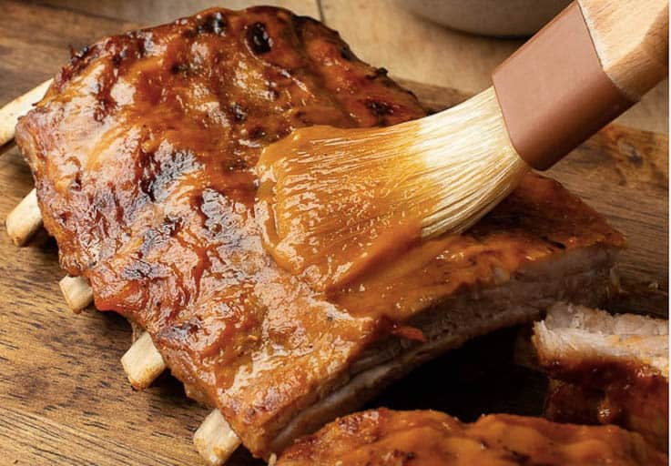

Instant Pot Baby Back Ribs

description heading
description
Ingredients
- Ribs
- olive oil
- dry rub of choice
- bbq sauce
- apple cider vinegar
Steps
- clean ribs and cut away as much fat as possible and remove that membrane (optional)
- drizzle some olive oil onto the ribs
- generously coat and rub in the dry rub (let it sit for 15min or so, optional)
- place the metal rack known as a trivet into the instant pot
- pour a little bit of water and the vinegar to about a quarter-half of the legs of the rack
- place ribs in and cook for about 30min on high pressure
- let the meat naturally decompress (you could seize the meat making it tougher)
- place it onto a backing pan and brush on your choice of bbq sauce
- place into oven set to broil for 5-10min to let the bbq sauce caramelize
- remove to let it rest and enjoy a super tender fall off the bone rack of ribs